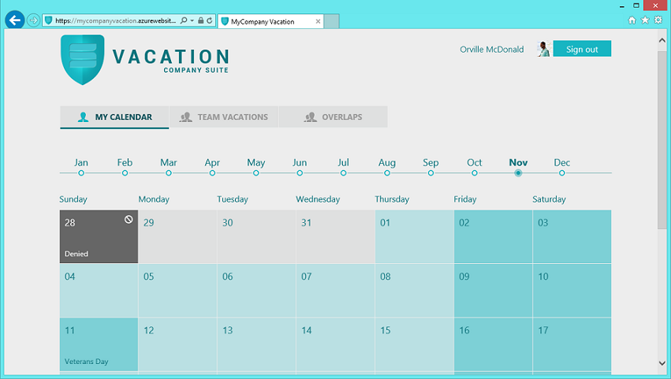

MyCompany VACATION demo application
Introduction
At the Visual Studio 2013 Launch Event (Nov. 13th 2013), Microsoft used a set of demo applications to explain the new features in .NET 4.5.1 and Visual Studio 2013. Here we are publishing those demo applications.
MyCompany is a set of sample applications comprised of typical enterprise/business modules: Travel, Staff, Vacation, Visitors and Expenses.Each of these business applications are autonomous
and could have been developed by different teams. They use different technologies and solutions to fulfill the different requirements from different user profiles and desired scenarios. All web and services solutions can be deployed to Windows Azure,
and all of them are using Windows Azure Active Directory to support Single-Sign-On between all the applications in the suite.The companies can also federate the directory service with their on-premises directories (corporate Active Directory) to support SSO
using the on-premises corporate AD credentials.A few of the web apps can also be integrated as apps for SharePoint within Office 365.
In summary, different technologies are used depending on the business application scenarios: Web Apps, Windows Store, Windows Phone, WPF desktop, etc.

This concrete business application is called VACATION and it is described below.
Building the Sample
Requirements
Visual Studio 2013
Windows Azure SDK 2.2
SQL Server 2012 Express LocalDB (included in VS 2013)
Windows Azure SQL DB (for Cloud deployment)
Windows Azure Web Sites (for Cloud deployment)
Description
Vacation Web App (SPA - Single Page Application):

Simplified Architecture Diagram

Goals
Covered Technologies
Services technologies
|
ASP.NET Web API 2 |
|
Attribute Routes |
|
OWIN-Katana |
|
Web API OData |
|
SignalR 2.0 |
|
Entity Framework 6 |
|
Email notification |
|
Windows Azure Service Bus |
Web Application technologies
|
ASP.NET MVC 5 |
|
SPA Web application |
|
Durandal (App for SharePoint Version) |
|
Knockout.js (App for SharePoint Version) |
|
Angular.js (Standalone Version) |
|
App for SharePoint |
|
App for Office 365 |
Security technologies
|
Windows Azure Active Directory |
|
ASP.NET Identity |
|
SharePoint integrated security |
Office 365 technologies
|
App for SharePoint – ASP.NET MVC |
|
App for Office 365 – Mail app |
What this demo application is NOT about
These applications are not production systems and are not intended as a guidance for mission-critical applications, as it mostly covers CRUD and Data-Driven scenarios, only. If you need guidance for complex scenarios, we recommend to check guidance material from the Microsoft Patterns & Practices group like the ‘CQRS Journey guidance’, which shows a reference application with a related functional domain & scope (Events/Conferences platform) but from a different point of view based on design-patterns and best architectural practices for complex scenarios, covering approaches like CQRS (Command & Query Responsibility Segregation) & DDD (Domain Driven Design).